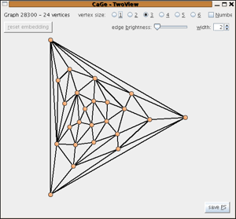

The triangulations generators
A triangulation of the plane - or equivalently of the sphere - is a plane graph with all faces triangles. Because these triangulations are the most common ones, they are simetimes just called "triangulation" without explicitly mentioning the sphere or plane. There is also one window to generate triangulations of the disk. In this window there is one distinguished outer face - the outside of the disk - that need not be a triangle. For a lot of these structures the current - chemically oriented - 3D-embedders do not produce nice pictures. Writing specialized embedders for these structures will be future work.
General Triangulations
In this window you can generate triangulations without too many restrictions very efficiently. The number of vertices, the minimum degree of the vertices, and a lower bound for the connectivity number must be given. Due to the Euler formula and the fact that the graphs are simple the only possible values for the connectivity number of a triangulation with at least 4 vertices are 3,4, and 5. As an option one can choose to only generate graphs with connectivity number exactly the lower bound.

Eulerian Triangulations
A graph is called Eulerian if it admits an Euler-tour - that is a closed walk using each edge exactly once. Such a closed walk exists if and only if the degree of every vertex is even. The number of vertices must be chosen, but due to the Euler formula the minimum degree of a simple triangulation with at least 4 vertices is always 4 - so no choice is possible. The connectivity number can be 3 or 4 and it is possible to choose a lower bound or the exact value of the connectivity number of the graphs generated.
Triangulations with given vertex degrees
In this window you can generate triangulations in which the vertices have degrees out of some given list. The required parameters are the number of vertices and a list of allowed degrees. Optionally lower and upper bounds for the number of vertices for each degree can be specified.
Triangulations of the Disk
Triangulations of the disk have a distinguished outer face - the outside of the disk - which is not required to be a triangle. Isomorphisms must map these distinguished outer faces onto each other. In cases where the distinguished face is larger than a triangle, two triangulations of the disk are isomorphic as plane graphs if and only if they are isomorphic as triangulations of the disk. In cases where the outer face is a triangle, it is possible that several isomorphic plane graphs are generated -- but there will be no isomorphisms mapping the distinguished faces of different graphs onto each other. In order to emphasize this important role of the distinguished face, it is always displayed as the outer face in the 2D-drawings.
The number of vertices of the triangulation of the disk must be given. Furthermore it is possible to
- fix the size of the distinguished face
- allow, forbid, or even require chords (that is: edges not in the boundary of the distinguished face but connecting vertices in the distinguised face)
- allow and forbid 2-valent vertices in the boundary. Note that 2-valent vertices not in the boundary are not possible for simple triangulations of the disk.
Further Links
- Stuart Anderson has used plantri and later CaGe to generate graphs for his collection of Squared Rectangles.
The mathematics and implementation of plantri are a collaboration between Gunnar Brinkmann and Brendan D. McKay, who distributes the "naked" generator on his website.
| choosing
a generator window |
||
| the
tubes and cones windows |
||